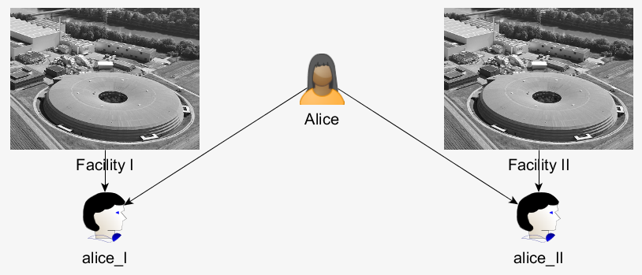

umbrellaID is the federated identity system for the users of the (European) large neutron and photon facilities.
Users of the photon and neutron facilities constitute a large community (with 30’000+ visiting scientists in Europe alone). At the moment the management of the experiments including identity management is performed locally on site via Web-based User Office (WUO) tools. However, users perform experiments increasingly at different facilities, about 30% on the average, in some research fields even up to 40%. They want to minimize the corresponding administration load and are interested in harmonized application surfaces. In addition, they need access to the data stored at the facilities and / or want to participate remotely in experiments. These trans-facility services need a federated identity management as provided by umbrellaID. Furthermore, centralized data analysis will become more important which again needs a federated identity management.
The direct advantage of the umbrellaID environment for the user is that he/she has only one account for all partner facilities and once logged in he/she can access the services at these partner facilities without a need for a new identification (Single Sign On).
Consider Alice:

umbrellaID aims to make Alice's life easier